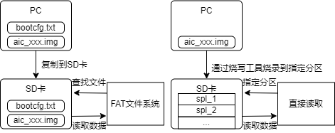

3.6.6. SDFAT32 加载¶
SDFAT32启动方式更为简单，不需要专业的烧录工具进行烧写，只需要将镜像文件复制到SD卡即可。

图 3.3 MMC与SD卡启动差异¶
SDFAT32是基于MMC建立的，加载程序也在spl_mmc.c中实现，通过使用宏：
SPL_LOAD_IMAGE_METHOD(“MMC2”, 0, BOOT_DEVICE_MMC2, spl_mmc_load_image);
将 spl_mmc_load_image 函数添加到 .u_boot_list_2_spl_image_loader_* 段。
在board_init_r(gd_t *dummy1, ulong dummy2)函数中，会调用boot_from_devices从device中去选择启动介质，通过启动介质选择对应的加载程序，获取启动镜像。
// source/uboot-2021.10/common/spl/spl.c
boot_from_devices
| // 这里会传递一个空的spl_image_info结构体，以及传递一个启动设备的列表，这里为第一个值为BOOT_DEVICE_MMC2
|->spl_ll_find_loader(bootdev); // bootdev=BOOT_DEVICE_MMC2,根据bootdev查找spl_load_image指针
|->spl_load_image(spl_image, loader); // 这里已经获取到对应启动设备的加载器
|->loader->load_image(spl_image, &bootdev); // 调用加载器的实现函数spl_mmc_load_image
进入到对应启动介质的加载程序中，通过CONFIG_SPL_FS_LOAD_PAYLOAD_NAME指定启动镜像配置文件，从中获取镜像在SD卡中的实际地址。
// source/uboot-2021.10/common/spl/spl_fat.c
spl_mmc_load_image
|->spl_mmc_load(spl_image, bootdev,...); // 这里CONFIG_SPL_FS_LOAD_PAYLOAD_NAME=bootcfg.txt
|->spl_mmc_find_device(&mmc, bootdev->boot_device); // 先找mmc设备
|->mmc_init(mmc); // 再进行mmc设备的初始化
|->spl_mmc_boot_mode(bootdev->boot_device);
| // 选择启动方式，这里获取到的是MMCSD_MODE_FS方式启动
|->spl_mmc_do_fs_boot(spl_image, mmc, filename); // filename为bootcfg.txt
|->aic_spl_load_image_fat(spl_image, mmc_get_blk_desc(mmc), filename);
|->blk_dread(cur_dev, 0, 1, header);
| // 读取SD卡的第0块。
|->check_identifier(header); // 检测SD卡的分区类型选择启动方式
|->load_image_from_mbr_part_fat32(header, filename); // 以MBR分区格式去加载镜像
|->blk_dread(cur_dev, part.lba_start, 1, header);
| // 读取LBA起始地址
|->check_identifier(header); // 检测SD卡分区类型是否为FAT32
|->load_image_from_raw_volume_fat32(part.lba_start, header, filename);
| // 获取BPB内容
|->load_image_file(header, filename);
|->aic_fat_read_file(filename, (u8 *)header, 0, 1024, &actread);
| // 查找并读取bootcfg.txt文件内容到header地址
|->boot_cfg_parse_file((u8 *)header, actread, "boot1", ...);
| // 解析bootcfg.txt信息，获取image名称，解析U-Boot的大小，以及相对
| // image文件中U-Boot所在的偏移地址
|->aic_fat_read_file(imgname, header, ...); //读取image文件的header
|->spl_parse_image_header(spl_image, header);
| // 解析U-Boot中前64个字节内容，设置加载地址
|->aic_fat_read_file(imgname, (u8 *)spl_image->load_addr, ...);
| // 读取U-Boot镜像到spl_image->load_addr地址。
|->board_init_r(); // 跳转回board_init_r()继续执行
读取U-Boot镜像到内存后，跳转回board_init_r()继续执行
// source/uboot-2021.10/common/spl/spl.c
board_init_r()
|->spl_perform_fixups // vendor hook，用于修改device-tree传递参数
|->jump_to_image_no_args(&spl_image);
|->image_entry = (image_entry_withargs_t)spl_image->entry_point; // 获取U-Boot加载地址
|->set_boot_device(boot_param, aic_get_boot_device()); // 设置启动介质
|->set_boot_reason(boot_param, aic_get_boot_reason()); // 设置启动原因（冷启动或者热启动）
|->image_entry(boot_param, cur_tm); // 进入U-Boot执行，并传递一些参数